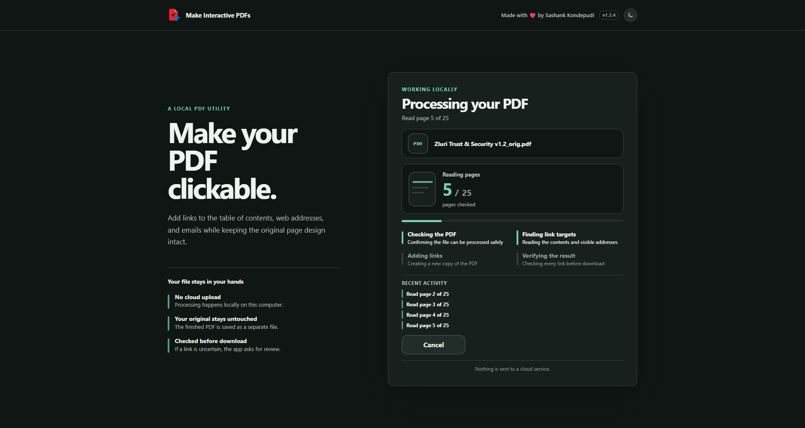

Jump straight to pages
Adds page links from contents, agendas, indexes, and similar reference lists.
FREE WINDOWS UTILITY
Add page jumps and visible links without uploading your PDF or changing its design.
Follow each stage, page count, and recent activity without waiting on a blank loading screen.

Useful links are added while the original layout stays intact.
Adds page links from contents, agendas, indexes, and similar reference lists.
Makes web addresses and email addresses clickable in the finished PDF.
Reads the existing text layer first and uses local OCR only where text is unusable.
Creates a separate copy and verifies its links before making it available.
Your PDF is processed on your computer through a local browser workspace. It is not sent to a cloud service.
The small desktop controller keeps the local processor running while Chrome shows the workspace.
Launch the EXE. The PDF workspace opens in Chrome.
Select one PDF and let the app find useful link targets.
Save the checked copy. Your original file stays untouched.
If a PDF already has a usable text layer, the app reads it directly. OCR runs locally only where text is missing or unusable.
OCR helps the app find and place links. It does not redraw the page or make every scanned word selectable.
Yes. The app is free to use, open source, and licensed under MIT.
No. Processing happens on your computer through a local browser workspace.
No. OCR runs only when the existing text layer is missing or unusable.
Page jumps from contents-style lists, plus clickable web and email addresses.
The app is not code-signed yet, so Windows may show SmartScreen. Only open a copy downloaded from this official GitHub repository.
Forms, audio, video, password-protected PDFs, and digitally signed PDFs are not currently supported.
Built to make everyday PDFs easier to navigate without asking people to upload sensitive files.